Free and open source · for Mac
Sketch clean and editable graphs on your Mac.
Draw all kinds of graphs, from function plots, scatter plots and time series to supply and demand, cost curves and welfare areas. Sketch them without any data, or paste a table from a spreadsheet and plot it. Everything stays editable, and exports as a crisp PDF or PNG.
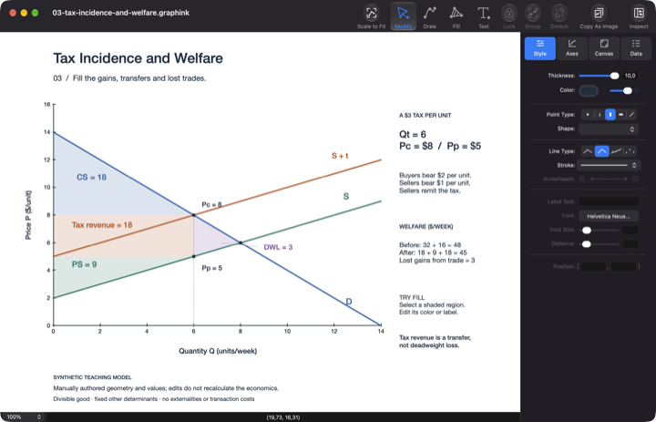
What it does
-
Draw without data
Lines, points, shaded areas and labels on real axes.
-
Or plot your data
Copy columns from a spreadsheet or a CSV file and paste them.
-
Editable to the end
Open it next term and move the curve.
-
Ready for slides and handouts
PDF, or images at up to 300 DPI.
Start from an example
File › New From opens any of these as an editable copy: 18 microeconomics lessons, nine templates and three charts built from official data.
Lessons
-
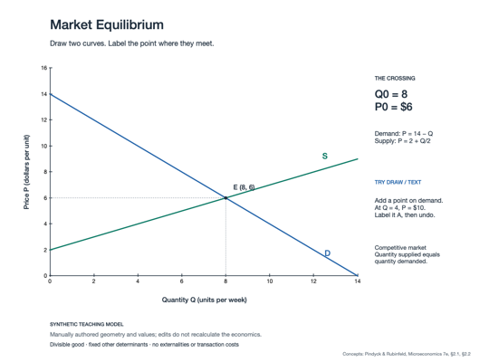
Market Equilibrium -
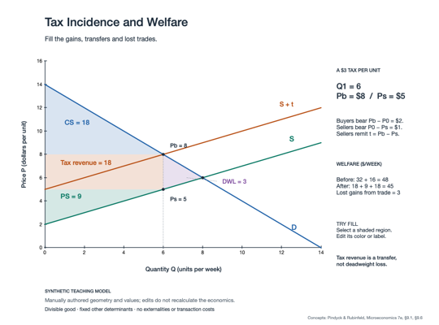
Tax Incidence and Welfare -
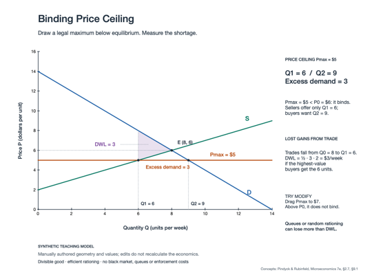
Binding Price Ceiling -
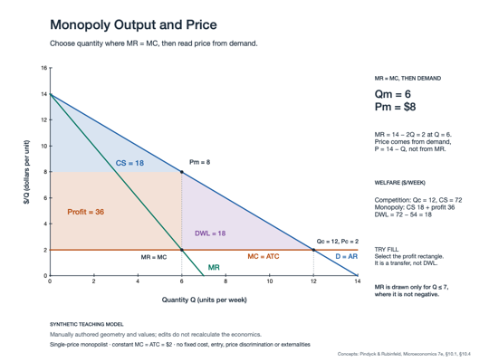
Monopoly Output and Price -
Marginal and Average Cost -
Budget Line and Indifference Curves


Templates
-
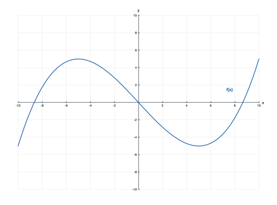
Function Plot -
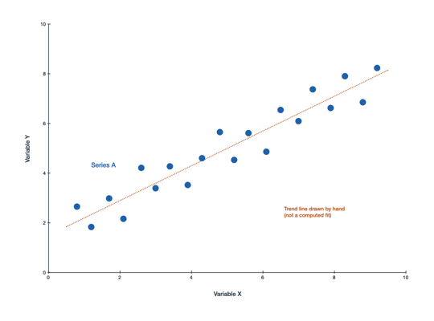
Scatter Plot -
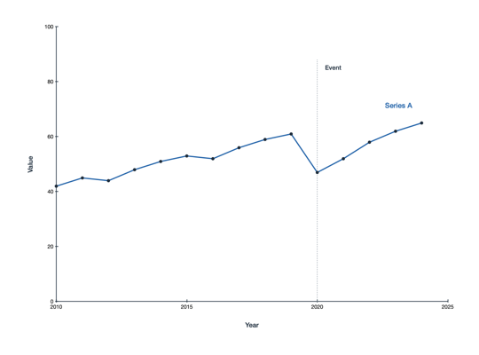
Time Series


Data charts
-
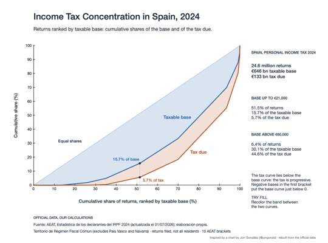
Income Tax Concentration in Spain, 2024 -
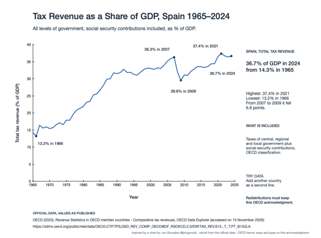
Tax Revenue as a Share of GDP, Spain -
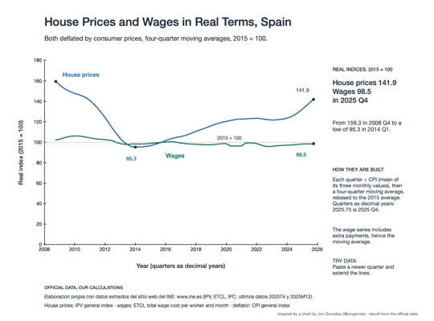
House Prices and Wages in Real Terms, Spain


Download
Free and open source. Runs on Macs with Apple silicon; tested on macOS 27.
First launch
Graphink isn't notarized by Apple yet, so macOS stops it the first time. You allow it once:
- Open
Graphink.dmgand drag Graphink into Applications. - Open Graphink. macOS says it can't verify the app; click Done.
- Open System Settings › Privacy & Security, scroll down, click Open Anyway and confirm with your password.
Found a problem? Report it on GitHub.